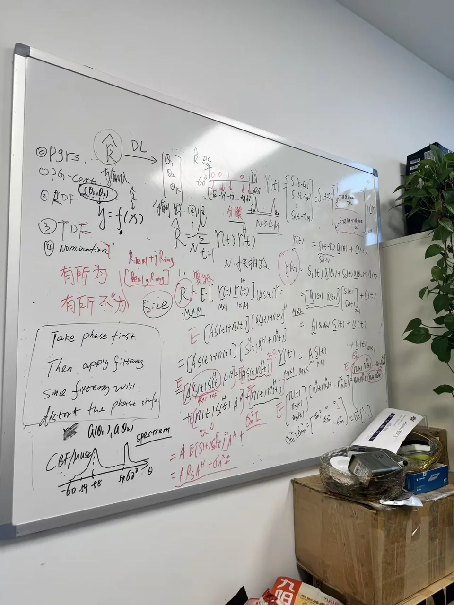
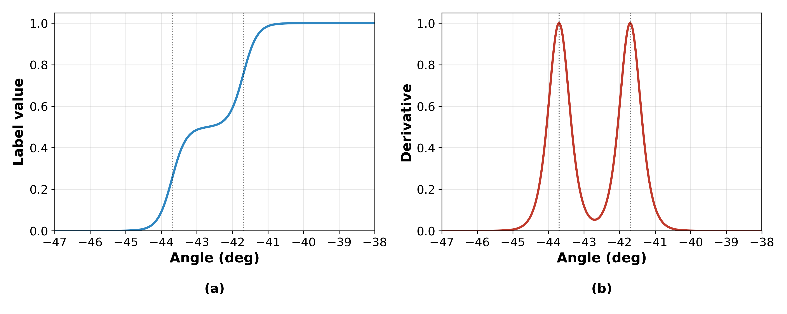

LAB NOTES
At the whiteboard
I sketch antenna models and spectra before I turn them into code. My undergraduate projects have used FMCW radar for ranging and for non-contact respiration and heartbeat sensing.
DATA SCIENCE AT XJTLU
I work on radar and the maths behind it. Away from the lab, I take photos when I travel and build tools around my interest in value investing.

LAB NOTES
I sketch antenna models and spectra before I turn them into code. My undergraduate projects have used FMCW radar for ranging and for non-contact respiration and heartbeat sensing.

View figureSUBMITTED TO ICASSP 2027
My CNN–Transformer project uses sigmoid labels and derivative peaks to estimate directions between grid points.
INTERACTIVE DEMO
Move the slider to change where the signal comes from. The peak shows where the eight-element array responds most strongly.
One simulated source. Half-wavelength sensor spacing.
The response peaks when the steering angle matches the direction of the source.
VALUE INVESTING
Value investing interests me because it starts with understanding a business. I also build my own trading platform, a personal software project alongside that interest.
I study Data Science and Big Data Technology, and Innovation and Entrepreneurship, at Xi’an Jiaotong-Liverpool University.
I worked on network security operations at China Mobile and document-processing workflows at Shanghai Weiqu Network Technology.